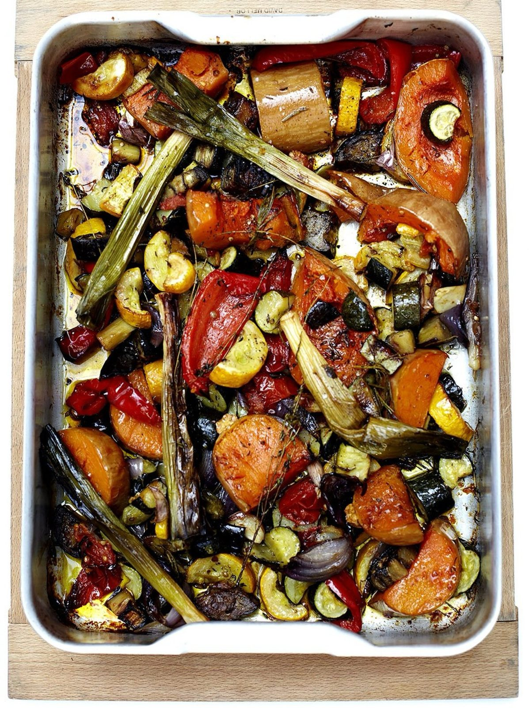

Roasted Vegetables
A big tray of summer vegetables roasted with coriander seeds, rosemary and thyme.

Before you start heat the oven to 200°C/gas 6.
Ingredients
Method
To prepare the vegetables
- Halve and deseed the 2 red peppers, then cut each half into 4 pieces.
- Peel the 1 red onion and cut into 8 wedges.
- Carefully cut the 1 butternut squash in half, scoop out and discard the seeds, then cut each half into 2cm chunks.
- Wash and trim the 6 baby leeks.
- Halve the 4 courgettes lengthways, then slice into 2cm chunks.
- Top and tail the 1 aubergine, cut it into quarters, then into 2cm chunks.
- Quarter the 2 tomatoes.
- Leave the 6 garlic cloves in their skins, but squash them with the heel of your hand.
To roast
- Put all the veg into an extra large roasting tray, or two smaller ones.
- Crush the 1 tbsp coriander seeds in a pestle and mortar, then scatter over the veg with a good pinch of sea salt and freshly ground black pepper.
- Pick and roughly chop the rosemary leaves, and pick the thyme leaves. Scatter the herbs over the veg.
- Drizzle well with olive oil and toss to coat.
- Roast at 200°C/gas 6 for around 50 minutes, until soft, golden and cooked through, turning once or twice so they colour evenly.
Notes
- Serves 10 as a side. Good with roast chicken, grilled meats or fish, or tossed through pasta or couscous for a meal on its own.
- If the veg look crowded in one tray, split them between two. Overcrowding stops enough heat reaching them and they steam rather than roast. Swap the trays round halfway through.
- Works with almost any combination of veg, so it is a good way to use up what is in the fridge. Keep the oven fairly hot and cut everything to roughly the same size.
- Can be made ahead and is just as good cold.
Source: https://www.jamieoliver.com/recipes/vegetables/roasted-vegetables/